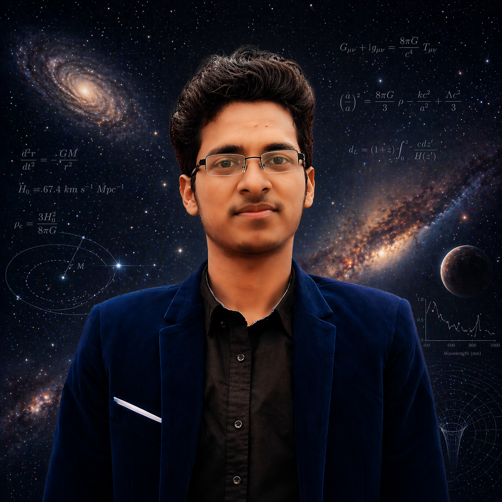

🎯 Mission
To advance the understanding of quantum many-body systems through rigorous theoretical analysis and innovative computational approaches, contributing to the broader scientific community's knowledge of collective quantum phenomena.

I'm a passionate physics graduate with a deep curiosity for quantum systems, collective phenomena, and the computational tools that help us understand them. My work sits at the intersection of theoretical physics and high-performance computing.
My fascination with physics began with a simple question: "Why does the universe behave the way it does?" This curiosity led me to pursue a degree in Physics, where I discovered the elegant and often counterintuitive world of quantum mechanics.
During my studies, I became particularly drawn to condensed matter physics and quantum statistical mechanics. The idea that macroscopic quantum phenomena like superfluidity and Bose-Einstein condensation could emerge from the collective behavior of countless particles captivated me.
Today, I combine theoretical analysis with computational modeling to explore these phenomena. I believe that the interplay between analytical insight and numerical simulation is key to advancing our understanding of complex quantum systems.
To advance the understanding of quantum many-body systems through rigorous theoretical analysis and innovative computational approaches, contributing to the broader scientific community's knowledge of collective quantum phenomena.
To bridge the gap between theoretical physics and practical applications, leveraging insights from quantum systems to inform next-generation technologies in quantum computing, sensing, and materials science.
Scientific integrity, intellectual curiosity, collaborative spirit, and the relentless pursuit of truth through evidence-based reasoning and open inquiry.
Completed undergraduate studies with specialization in theoretical physics, quantum mechanics, and computational methods. Graduated with distinction.
Investigated Bose-Einstein condensation in photonic systems. Developed numerical simulations for thermalization dynamics and phase transition analysis.
Built a comprehensive simulation suite for solving the Gross-Pitaevskii equation in various trap geometries, studying vortex dynamics and collective excitations.
Preparing for graduate studies in condensed matter physics. Engaged in independent research on 2D materials and topological quantum phases.
Proficient in theoretical frameworks, computational tools, and programming languages essential for modern physics research.
When I'm not debugging code or solving equations, here's what keeps me inspired.
Capturing the night sky reminds me why I fell in love with physics. There's something humbling about photographing distant galaxies while studying their underlying quantum mechanics.
I play guitar and find deep connections between harmonic theory and quantum field theory. Both are fundamentally about modes, frequencies, and resonances.
I write blog posts and create content to make complex physics accessible. If we can't explain it simply, we don't understand it well enough.
Download my complete CV for detailed information about my education, research experience, publications, and technical skills.
Download CV (PDF)Last updated: January 2026